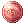
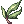
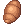
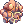

Cooking With Selim

Welcome to cooking with Selim!!! get ready to cook
Selim's swamped with orders for her famous Halloween dishes, so she's offering you the opportunity to help her fetch ingredients in exchange for +10 Stat Foods and Phantom Favors. Get ready to type @wn, @wd, and then forget to type @wn first so you accidentally spend 30 minutes farming 10 Black Ladles before realizing that they're sold at an NPC for 400 zeny each.
How to Cook with Selim
You can either take a look at this Cooking Tool Website, or continue reading this article.
Introduction
Upon talking to Selim in Prontera and selecting Cooking with Selim for the first time, she will give you a Selim's Cookbook. This cookbook contains all the recipes that she will request.
Daily Quest
After choosing Cooking with Selim, you can take the Daily Quest. Selim will present you with 3 different recipes. To cook each dish, you will need to have all the ingredients in your inventory, then use a Spooky Cooking Kit (sold at the Bad Monkey NPC for 2  Spectral Nanners each) to craft each dish, then bring all 3 dishes to Selim.
Spectral Nanners each) to craft each dish, then bring all 3 dishes to Selim.
After presenting Selim with all 3 dishes, she will warp you as a ghost into a dungeon to obtain one last ingredient. You will become unable to attack or cast spells, but untargettable and ignored by monsters. Walk to the marked location on the minimap to view a short cutscene and then be warped back to Selim.
After being warped back, Selim will finish up the dishes and let you choose which Sin you would like to feed to receive the corresponding +10 food.
Completing the daily quest will award you with one Phantom Favor, which can be spent at the Tricky Ghost NPC in Prontera, and 10 food +10 of the stat you chose.
Note that the daily quest requires you to craft 3 dishes per day for wich you will need to buy ingredients with 36 Spectral Nanners = 180  Halloween Coins
Halloween Coins
Recipes
| Dish | Ingredients | Ingredient Locations |
|---|---|---|
| Blood Bisque | 1 Fresh Blood | Costs 10 Spectral Nanners, from Bad Monkey NPC
|
5  Blood of Wolf Blood of Wolf
|
From Desert Wolf, Warper > Dungeons > Ice Dungeon > exit to portal | |
10  Berserk Potion Berserk Potion
|
From Tool Dealer in any save point | |
15  Medicine Bowl Medicine Bowl
|
From Alchemist Supplies, @wn Medicine Bowls | |
| 20  Bloody Rune | From Rachel Sanctuary mobs, Warper > Dungeons > Rachel Sanctuary | |
| 10 Animal Gore | From Coyote, @go 43> Walk to East portal | |
| Chili con Goblin | 1 Minced Meat | Costs 10 Spectral Nanners, from Bad Monkey NPC
|
| 2 Tom Yum Goongs | From Tom Yung Goong Quest | |
| 10 Red Spice | From NPC, @wn Red Spice | |
10  Spicy Sauce Spicy Sauce
|
From NPC, @wn Spicy Sauce | |
20  Burning Hair Burning Hair
|
From Explosion, Warper > Dungeons > Magma Dungeon or Imps and Kasa, Warper > Dungeons > Thor Volcano (Most faster) | |
| 10 Red Chiles | Recommended to bulk-buy Red Chiles from Tom Yum Goong Quest, otherwise drops from Kraben, Warper > Dungeons > Ayothaya Dungeon 2F | |
| Screeching Potluck | 1 Egg Yolk | Costs 10 Spectral Nanners, from Bad Monkey NPC
|
1  Shackles Shackles
|
From Zombie Prisoner, Warper > Dungeons > Glast Heim > Glast Heim Castle, @navi gl_prison | |
2  Violin Violin
|
From NPC, @wn Violin | |
| 10 Black Ladle | From NPC, @wn Black Ladle | |
| 5 Mole Whisker | From Martin, Warper > Dungeons > Coal Mines | |
5  Orc Claw Orc Claw
|
From Orc Zombies, Warper > Dungeons > Orc Dungeon | |
 Spooky Saute Spooky Saute
|
1 Fresh Blood | Costs 10 Spectral Nanners, from Bad Monkey NPC
|
| 3  Bitter Herb | From Uzhas, Warper > Dungeons > Moscovia Dungeon | |
| 20 Butterfly Wing | From Tool Dealer in any save point | |
5  Cooking Oil Cooking Oil
|
From NPC, @wn Cooking Oil | |
20  Fang Fang
|
From Orc Archer, Warper > Dungeons > Orc Dungeon, @navi gef_fild14 | |
25  Little Evil Wing Little Evil Wing
|
From Mini Demon, Warper > Dungeons > Geffenia | |
| Bones au Gratin | 1 Sweet Rice | Costs 10 Spectral Nanners, from Bad Monkey NPC
|
| 1 Well-dried Bone | From Pirate Skeleton, Warper > Dungeons > Sunken Ship | |
2  China China
|
From NPC, @wn China | |
| 20 Clam Shell | From Red Eruma, Warper > Dungeons > Malangdo Dungeon | |
| 30 Clean Bone | From Coyote, @go 43 > Walk to East portal | |
30  Skel-bone Skel-bone
|
From various mobs, either Sunken Ship (Pirate Skeleton) or Payon Dungeon (Skeleton) is most ideal | |
| Meaty Fingers | 1 Weisswurst | Costs 10 Spectral Nanners, from Bad Monkey NPC
|
| 5 Claw of Monkey | From Choco, @go 12 > Take South portal twice | |
| 1 Knuckle Duster | From NPC, @wn 1803 | |
5  Cool Gravy Cool Gravy
|
From NPC, @wn Cool Gravy | |
5  Gold Ring Gold Ring
|
From various mobs, either Geffenia (Incubus) or Thanatos Tower (Ancient Mimic) is most ideal | |
25  Decayed Nail Decayed Nail
|
From Zombie, Warper > Dungeons > Payon Dungeon | |
| Quivering Kibbeling | 1 Moldy Flour | Costs 10 Spectral Nanners, from Bad Monkey NPC
|
| 25 Animal Skin | From NPC, @wn Animal Skin | |
| 25 Mould Powder | From Punk, Warper > Dungeon > Clock Tower | |
25  Ectoplasm Ectoplasm
|
From Lude / Quve, @go Niflheim | |
| Vampire Special | 1 Egg Yolk | Costs 10 Spectral Nanners, from Bad Monkey NPC
|
| 1 Manteau | From NPC, @wn Manteau | |
| 15 Rice Cake | From Evil Cloud Hermit, Warper > Dungeon > Gonryun Dungeon > @navi gon_dun03 | |
20  Wing of Red Bat Wing of Red Bat
|
From Drainliar, Warper > Dungeon > Sphinx or from Manananggal, Warper > Instance > Bangungot Hospital F2 (Most ideal) | |
| Rafflesia on Platter | 1 Sweet Rice | Costs 10 Spectral Nanners, from Bad Monkey NPC
|
| 5 Fresh Plant | From Heidi / Pet Groomer , @wn Fresh Plant | |
| 20 Sharp Leaf | From Dryad, Warper > Dungeon > Beach Dungeon 2 > exit to portal | |
| 25 Fig Leaf | From Leaf Cat, Warper > Dungeon > Ayothaya Dungeon 1 > exit to portal or farm in the dungeon | |
| Haunted Roll | 1 Moldy Flour | Costs 10 Spectral Nanners, from Bad Monkey NPC
|
| 20 Pumpkin | From NPC, @wn Pumpkin | |
| 15 Little Ghost Doll | From Dancing Dragon / Li Me Mang Ryang, Warper > Dungeon > Louyang Dungeon [Dancing Dragon on level 3, Li Me Mang Ryang on level 1] | |
15  Cobweb Cobweb
|
From Argos, Warper > Illusion Dungeon > Illusion of Labyrinth > right portal > top portal > @navi mjolnir_10 | |
| Grilled Mandragora Roots | 1 Weisswurst | Costs 10 Spectral Nanners, from Bad Monkey NPC
|
20  Tree Root Tree Root
|
From NPC, @wn Tree Root | |
| 20 Brown Root | From Dryad, Warper > Dungeon > Beach Dungeon 2 > exit to portal | |
10  Mandragora Flowerpot Mandragora Flowerpot
|
From Wild Ginseng, Warper > Dungeon > Gonryun Dungeon > @navi gon_dun03 | |
| Fried Brain Sandwich | 1 Minced Meat | Costs 10 Spectral Nanners, from Bad Monkey NPC
|
| 15  Bread | From NPC, @wn Bread | |
| 15  Detonator | From Marine Sphere, Warper > Dungeon > Byalan Dungeon > @navi izl_dun03 | |
| 15 Cheese | From Evil Cloud Hermit, Warper > Dungeon > Gonryun Dungeon > @navi gon_dun03 | |
Locations
- pay_dun03 99,146
- gl_cas01_ 24,192
- gl_sew02 182,112
- orcsdun02 107,48
- nif_fild02 78,270
- lhz_dun_n 33,224
- gef_dun02 215,179
- in_sphinx2 199,155
- lou_dun02 206,174
- nameless_n 85,114
- ayo_dun01 150,151
- ama_dun02 195,94